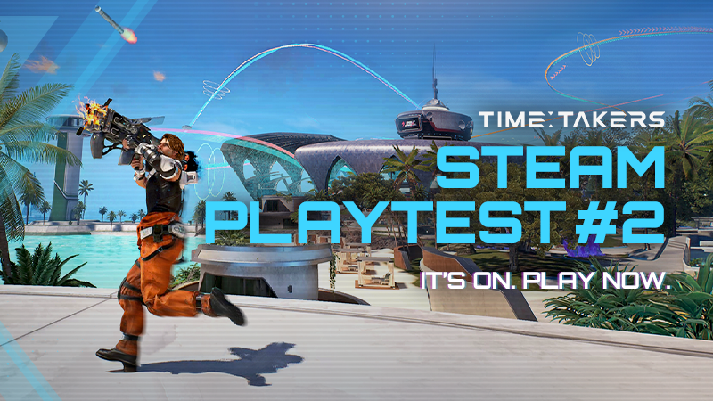
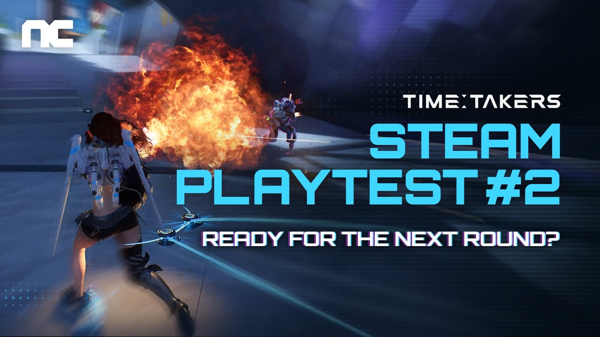
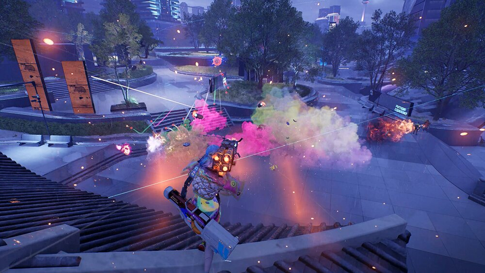
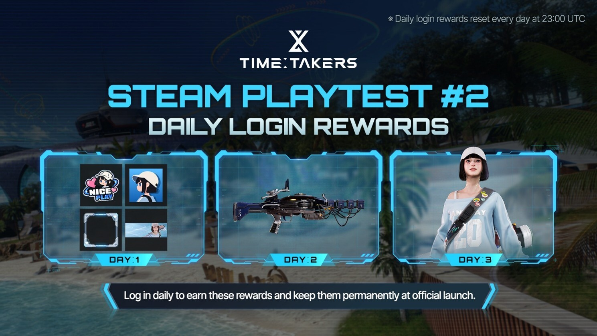

타임 테이커즈 2차 플레이테스트 바뀐 점 커티스 앱 이단 점프 대시
11월 13일 오전 8시에 2차 스팀 플레이테스트가 열려서 패치노트를 쭉 읽어 봤는데요, 1차 때와 달라진 게 꽤 많더라고요. 타임 테이커즈는 3인이 한 팀을 이뤄 4팀 12명이 맞붙는 3인칭 팀 서바이벌 슈터이고 무료로 즐길 수 있어요. 오늘은 신청 방법 말고 '바뀐 것'만 골라 정리해 볼게요. 참여는 스팀 스토어에서 접근 요청(Request access)을 해 두면 되고, 9월 1차나 3월 CBT에 들어갔던 분은 다시 요청하지 않아도 돼요. 기간 중에는 'Participate'를 눌러도 바로 입장할 수 있어요(공식 공지 기준).

2차 플레이테스트 개시 공지에 쓰인 이미지예요.
이미지 출처: 스팀 공식 공지 / NC · 네이버 본문엔 받아서 재업로드 권장
2차 플레이테스트, 1차랑 뭐가 달라졌을까요?
2차는 11월 13일 오전 8시부터 16일 오전 8시까지 72시간이고, 앱 시스템·커티스·이슬라 벨로스·AI 매치·연구소가 새로 공지됐고 대시와 리스폰도 손봤어요. 11월 11일에 공개된 패치노트를 보니 전후 수치가 같이 나온 것만 표에 담았어요.

2차 플레이테스트 안내 카드예요.
이미지 출처: 스팀 공식 공지 / NC · 네이버 본문엔 받아서 재업로드 권장
| 항목 | 이전 | 2차 |
|---|---|---|
| 대시 최대 충전 | 1회 | 2회 |
| 리스폰 무적 | 5초 | 3초 |
| 부활 직후 이속 부스트 | 7초 | 3.5초 |
| 버티 Banana Grenade 쿨 | 30초 | 12초 |
| 아서 Hold the Line 쿨 | 42초 | 17초 |
대시 충전이 2회가 되고 리스폰 무적이 3초로 줄었으니, 부활하고 나서의 움직임이 1차 때와는 꽤 다를 것 같아요. Balance 표를 보니 여행자 Q·E 스킬 쿨이 꽤 줄었더라고요. 무기 수치도 손봤는데 V-41 카빈은 좌클릭이 55에서 39로 내려가고 연사는 10에서 12로 올랐답니다. 그 밖에 사망했을 때 처치자의 스캔 외곽선과 벽 너머 이름표가 표시되고, 파라다이스 포드가 준결승·결승에도 나오며, 크로노팩은 5개씩 한 번에 열 수 있고 전투기록에서 바로 신고도 할 수 있어요.
이번에 새로 공지된 것들은 아래와 같아요.
- 이슬라 벨로스(Isla Veloz)는 2311년 카리브해 고급 휴양지가 배경인 새 전장이에요. 동력원인 크로노크리스탈이 폭주해 섬의 생명이 사라진 뒤에도 타임 에너지를 계속 내뿜는다는 설정이랍니다
- 매칭은 같은 인원수 파티끼리 우선(솔로 포함)이고, PLAY 화면에 AI 매치 메뉴가 생겼어요
- 연구소의 '메모리'는 프롤로그와 1부 '타임 에너지'를 한국어로 읽을 수 있고 판을 돌며 타임 에너지가 쌓이면 자동 해금돼요. 여행자의 기록을 전부 열면 테스트 기간에 쓸 수 있는 Legacy 스킨이 나오고, 일일 임무와 업적 UI도 개편됐어요
새 전장 이슬라 벨로스 화면이에요.
앱 시스템, 실제로 뭘 고르는 건가요?
앱 시스템은 여행자·무기·특전 위에 빌드를 한 겹 더 쌓는 방식으로, 최대 3개를 고르고 앱마다 좋은 효과 하나와 나쁜 효과 하나가 같이 붙어요. 3판을 마치면 열리고, 여행자 선택 화면이나 로드아웃 '조합' 탭에서 고르며 프리셋은 계정당 10개까지예요. 3월 CBT나 6월 익스클루시브 테스트에도 레벨업할 때 앱을 설치하는 다른 형태가 있었는데, 이번 패치노트는 경기 전에 3개를 골라 득·실을 맞바꾸는 방식으로 새로 공지했어요. 앱이 22종이라 눈에 띄는 8종만 먼저 보여 드릴게요.
| 앱(영문 공식명 · 풀이) | 좋은 점 | 나쁜 점 |
|---|---|---|
| Time Collector (시간 수집가) | 타임 에너지 수집 거리 +300% | 타임 에너지 획득 -10% |
| Headhunter (헤드헌터) | 헤드샷 피해 +10% | 받는 헤드샷 피해 +10% |
| Marathoner (마라토너) | 이동 속도 +10% | 대시 -1 |
| Over Dash (오버 대시) | 대시 +1 | 대시 쿨 +30% |
| Skill Master (스킬 마스터) | 스킬 피해 +20% | 스킬 쿨 +20% |
| Shield Converter (실드 변환기) | 최대 실드 +250 | 최대 체력 -200 |
| Stealth Leap (은신 점프) | 은신 중 점프력 +400% | 은신 중 받는 피해 +20% |
| Time Linker (타임 링커) | 연결 시 타임 에너지 획득 +10% | 연결 해제 시 타임 에너지 획득 -10% |
Time Linker의 좋은 점과 나쁜 점은 둘 다 생존 동료가 있을 때만 발동해요. 표에 없는 앱 중에서는 이런 것들이 있어요.
- Equivalent Exchange는 죽을 때마다 최대 실드·체력이 +10 붙고 대신 리스폰이 +0.5초 늘어요(최대 10중첩)
- Bomb Expert는 폭발형 스킬 사용 +1이 붙는 대신 폭발형 스킬 피해가 -15%예요(조란 Tracking Fire Grenade, 버티 Banana Grenade)
- Deployment Master는 설치형 스킬 사용 +1이 붙는 대신 피해가 -15%예요(에포크 Surprise Mine, 유나 Rec-O-Turret 등)
- Scales of Time은 보유 타임 에너지가 2분 30초 이하면 연사 +15%, 초과하면 무기 피해 -15%예요
Marathoner는 대시를 1 깎고 Over Dash는 1 더하니까, 대시 횟수를 두고 정반대로 움직이는 앱이 같이 있다는 게 재밌네요. 이동 위주로 움직이신다면 표에서 Marathoner(이동 속도 +10%, 대시 -1)나 Over Dash(대시 +1, 대시 쿨 +30%)처럼 대시 횟수가 달라지는 앱을 먼저 보시고, 교전 위주라면 Headhunter(헤드샷 피해 +10%, 받는 헤드샷 피해 +10%)처럼 헤드샷에 득·실이 몰린 앱을 보시면 돼요. 앱 이름은 영문 공식명이고, 괄호 안 한글은 이해하기 쉽게 풀어 적은 거예요. 한글 UI 명칭은 인게임에서 확인해 보세요.
앱 3칸을 채운 선택 화면이에요.
커티스는 스킬 세 개가 각각 뭘 하나요?
커티스는 11월 14일(토) 오전 8시부터 합류하고, 추적 개시는 90m 범위를 스캔하고, 전투 본능은 6초 동안 연사를 +20% 올리고, 은신은 8초 동안 투명해지면서 실드 200을 줘요. 공식 영문 패치노트에는 커티스가 Returning Traveler(복귀 여행자)로 소개돼 있어요. 한글 스킬명은 인벤 기사에 나온 표기예요.
| 스킬(영문) | 효과 | 쿨 | 수치 |
|---|---|---|---|
| 추적 개시 (Track Down) | 주변 스캔으로 오브젝트·적 위치 파악 | 20초 | 범위 90m · 3초 · 이속 +30% |
| 전투 본능 (Survival Instinct) | 일정 시간 무기 연사 증가 | 20초 | 연사 +20% · 6초 |
| 은신 (Low Profile) | 투명 + 추가 실드 | 78초 | 8초 · 실드 200 |
스킬에 붙는 퍽은 레벨마다 하나씩인데, Lv.5(Q)는 Tracking Restart로 쿨이 20초에서 17초로 줄어들어 스캔을 더 자주 돌릴 수 있고 Weak Point Analyzed로 스캔한 대상에게 무기 피해 +10%가 붙어요. Lv.9(E)는 Awakened Instinct로 쿨 17초, Battle Frenzy로 과열 -30%가 붙는답니다.
커티스의 은신과 맞닿은 앱도 있어요. Stealth Leap은 은신 중 점프력이 +400%로 오르고, Aggro Star는 90m 안 적에게 위치 노출을 다루는 앱인데 Low Profile 상태는 제외한다고 적혀 있어요.
커티스 카드와 스킬 툴팁이에요.
이단 점프랑 대시, 이동은 어디가 바뀌었나요?
이단 점프는 공중에서 한 번만, 대시는 최대 2번까지 충전, 슬라이드는 대시 뒤에도 속도를 이어가요. 이단 점프는 공중에서 한 번만 쓸 수 있다고 보시면 돼요(인벤에는 '재사용 대기시간 삭제'로 적혀 있어요).
| 항목 | 바뀐 내용 |
|---|---|
| 이단 점프 | 공중에서 한 번만(인벤은 '재사용 대기시간 삭제'로 표기) |
| 대시 | 최대 충전 2회 · 에임 점에 쿨다운 게이지 · 짚라인 중간에 나오면 공중 대시 |
| 슬라이드 | 대시 직후 속도 유지 · 미끄러지다 낙하해도 유지 · 내리막 가속 · 이속 버프 적용 |
| 조작 | 슬라이드 누르기/토글 설정 추가(기본 PC Ctrl) |
대시 게이지가 2칸 찬 모습이에요.
앱 쪽에도 이동과 닿아 있는 게 있는데요, Combat Boots는 전투 중 3초간 이동 속도 +30%인 대신 이동 속도 -10%가 붙고, Zipline Perk는 짚라인을 타면 활력 50%를 회복하는 대신 짚라인 쿨이 +100%랍니다.

전투 화면 예시예요.
이미지 출처: NC 제공(인벤 게재) · 네이버 본문엔 받아서 재업로드 권장
출석이랑 파라다이스 패스, 뭘 받나요?
3일 출석으로 프로필 꾸미기 아이템과 스킨 2종을 받고(정식 출시 때 지급·영구), 파라다이스 패스 최종 보상은 여행자 캐시의 코스튬 [네뷸라 화이트]예요. 출석은 매일 오전 8시(KST)에 초기화돼요.

3일 출석 보상 안내예요.
이미지 출처: 스팀 공식 공지 / NC · 네이버 본문엔 받아서 재업로드 권장
| 일차 | 보상 |
|---|---|
| Day 1 | 프로필 꾸미기(아이콘·테두리·스티커·명패 각 1개) |
| Day 2 | Flux Navy 스킨 |
| Day 3 | Alis Street Vintage: Ice Blue 스킨 |
놓친 날은 판을 돌려 모은 크로노스톤(Chronostones)으로 받을 수 있고, 이틀 이상 놓치면 가장 오래된 날부터 크로노스톤으로 사야 하며, 파라다이스 패스도 크로노스톤으로 기간 중 보상을 얻는 2차 한정 방식이에요.
자주 묻는 질문
Q. NC 계정이 있어야 하나요?
스토어 페이지 기준 NC 계정이 필요하고, 스팀 계정 연결도 지원돼요.
Q. 내 PC로 돌아갈까요?
최소는 RTX 2070·RAM 16GB·저장 공간 20GB, 권장은 RTX 3070이에요.
Q. 미리 받아 둘 수 있었나요?
11월 11일 스팀 공지로 사전 다운로드가 열렸어요. 테스트 시작 전에 받아 두면 8시에 바로 들어가기 편해요.
Q. 한국어와 비용은요?
한국어를 포함한 17개 언어를 지원하고 무료 플레이예요.
저라면 14일 오전 8시 이후에 커티스부터 열어 볼 것 같은데요, 앱 3칸은 좋은 점·나쁜 점 표 보면서 채우시는 걸 추천드려요. 14일에 커티스가 열리면 써 보고 다시 정리해서 들고 올게요~
✔ 타임 테이커즈 같이 보기 좋은 내용
· 타임 테이커즈 스팀 플레이테스트 신청방법 9월5일 72시간 무료체험
참고한 곳
· 스팀 공식 공지 패치노트(앱 시스템·커티스)
· 스팀 공식 공지 2차 플레이테스트 참여 안내
· 타임 테이커즈 스팀 스토어 페이지
· 인벤 신규 전장과 캐릭터 추가 기사
· 스팀 공식 공지 사전 다운로드 안내
※ 11월 11일 공개 패치노트 기준이며, 테스트 중 수치는 바뀔 수 있어요.